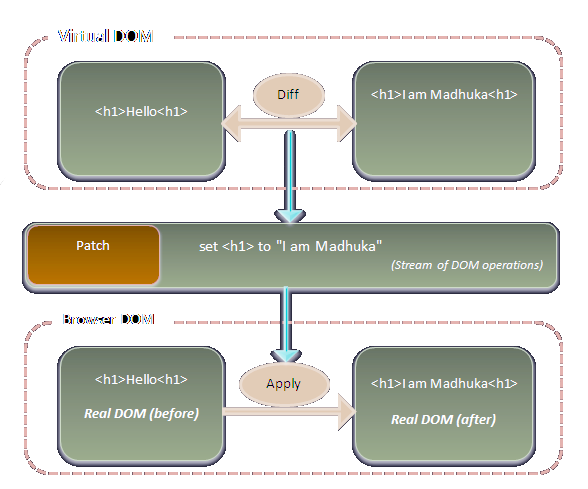

Full name: index.doSomething
Writing React and ReactNative applications with F#
 meets
and
meets
and

About
- Building software for over 20 years
- A principal architect at prolucid
- Author and contributor of several OSS projects, including Elmish
F# at glance
F# is a mature, open source, cross-platform, functional-first programming language:
- Type inference and syntax similar to the rest of ML familiy of languages (SML, OCaml)
- Interoperates with all .NET languages and libraries
- Great editor support (VS/Mac, VSCode+Ionide, Rider, Emacs, Vim)
F# - distinguishing features
- Immutable and non-nullable by default
- ADTs, Records and tuples with Structural Equality
- Pattern Matching
- Units of measure
- Comprehensions (seq, array, list)
- Computation Expressions
- Object Expressions
1: 2: 3: |
|
Typical satellites in an F# projects
Paket is an alternative NuGet client, it provides additional features, like reproducible builds, groups, non-nuget dependencies and `why` analsys.
Fake is a build automation tool, like Make and Rake. It is a single point of entry into entire build process, it lets one use F# to script the build and has a library of common tasks.
Fable at glance

- Compiles F# source code to JavaScript
- Powered by the F# compiler and Babel
 with Fable
with Fable

Fable
- Compatible with most of FSharp.Core and some .NET BCL
- Source maps for F# code debugging
- Constantly growing ecosystem (packages available on nuget)
- F# compiler itself is compiled to JavaScript and runs the REPL
- Checkout Fable-Awesome for tutorials, libraries and samples
Getting started
1: 2: 3: 4: 5: 6: 7: |
|
React and ReactNative
Declare views for each state in your SPA, and React will efficiently update and render just the right components when your data changes.
With React Native, you don't build a “mobile web app”, an “HTML5 app”, or a “hybrid app”. You build a real platform-specific app that's indistinguishable from an app built using C#, Objective-C or Java.
React Native uses the same fundamental UI building blocks as regular Windows, OSX, iOS and Android apps.
React - reconciliation

Taking advantage of React ecosystem
- Server-side rendering
- All React and ReactNative tooling: Browser plugins, native CLI, VSCode integration
-
All React and ReactNative libraries:
Available via "binding" libraries or direct JS interop:
- Look and feel (react-toolkit, ant-design)
- Microsoft ReactXP (share UI across SPA and Native)
- Notifications, Maps, Charts, etc
- Native platform peripherals (camera, scanners, etc)
- and much more
for details see Using 3rd party React components
Elm(ish)


Elmish app with child components

Elmish ecosystem
Documentation, Templates, Samples!
- React/Native support
- Time-travelling Debugger
- Hot Module Replacement
- Browser support (Routing and Navigation)
- Websockets
- Remoting
Offshots:
- WPF and Xamarin ports
- A C# port
Let's see some code!
Don't forget to star the projects on GitHub:
and join the F# Software Foundation!